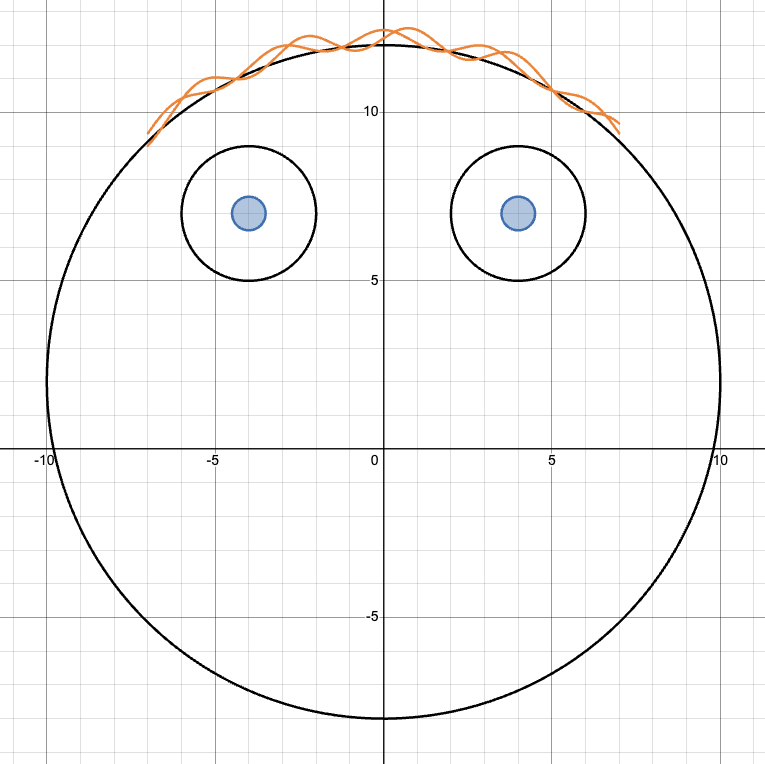

Animating with Functions
Introduction
In this exploration, we'll use function operations—specifically, weighted averages of functions—to create smooth transitions between graphs and animate a picture. This idea appears in many forms throughout computer graphics and animation, where it can be used to create intermediate states and motion.
1. Review of Weighted Averages
Shmulik just completed a college course called Birthday Cake in the AI Era. He scored an 80 on the midterm and a 100 on the final exam.
Now suppose the midterm counts for 30% of Shmulik's grade and the final exam counts for 70%.
2. General Solution
Now suppose Shmulik scores a on the midterm and b on the final exam. Let t be the weight assigned to the midterm.
3. Weighted Averages of Functions
Below are two functions, a(x) and b(x):
Define a new function
Notice: h(2) is a weighted average of a(2) and b(2).
The graph of h is produced by taking the same weighted average of a(x) and b(x) at every input x.
4. Changing the Weights
Now, let t be the weight assigned to the function a(x), and let 1 − t be the weight assigned to the function b(x):
Move the slider below to change the weights and watch what happens to the graph of h(x).
5. Moody Marvin
In classroom versions of this activity, this is where the guided exploration opens into a more creative one. I provided students with a prepared Desmos workspace containing the basic structure of Moody Marvin, shown below.

From this starting point, students can construct different versions of facial features using familiar function families, transformations, and restricted domains, then use weighted averages to create motion between them. The examples below show a few directions the exploration can take.
Start with one feature
Two endpoint functions and their weighted average control a single moving mouth. The visible Desmos expressions make the connection to the guided lesson explicit.
Coordinate several features
The same parameter can coordinate several independently constructed features at once.
Open up the design space
More elaborate expressions can combine several kinds of motion into a single animated construction.
The level of scaffolding can vary with the audience. Endpoint functions can be supplied, partially constructed, or left entirely for students to design. More advanced groups can coordinate several moving features using the same parameter.